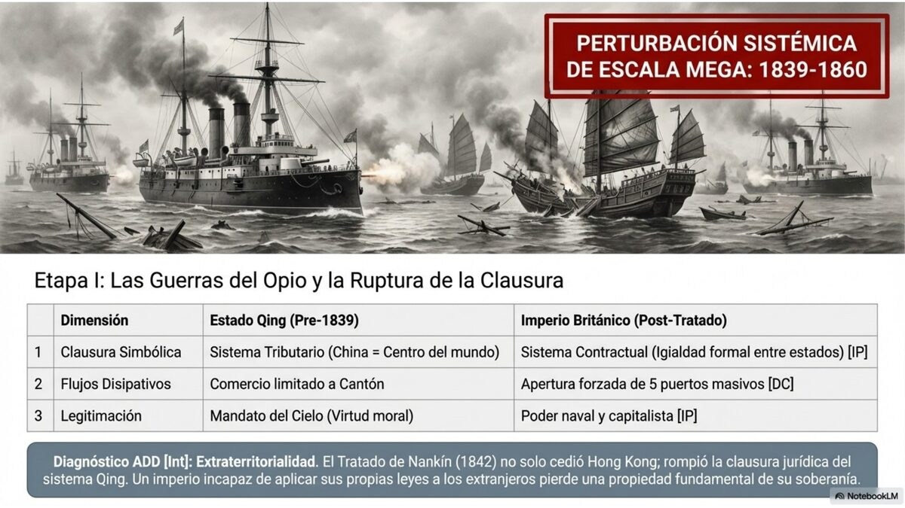
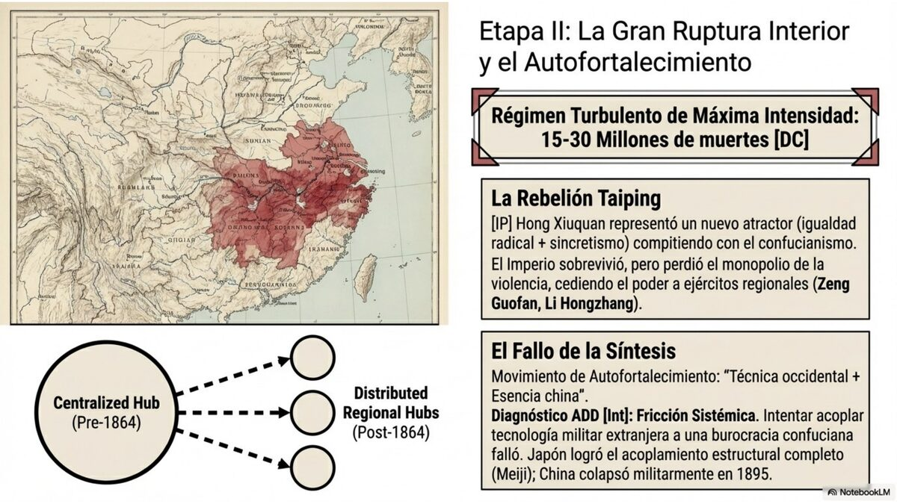
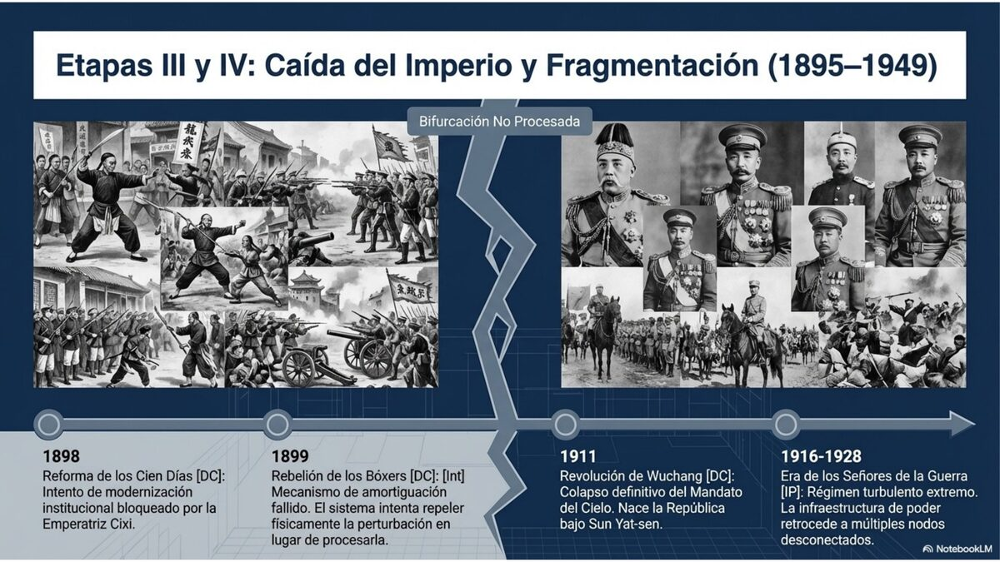
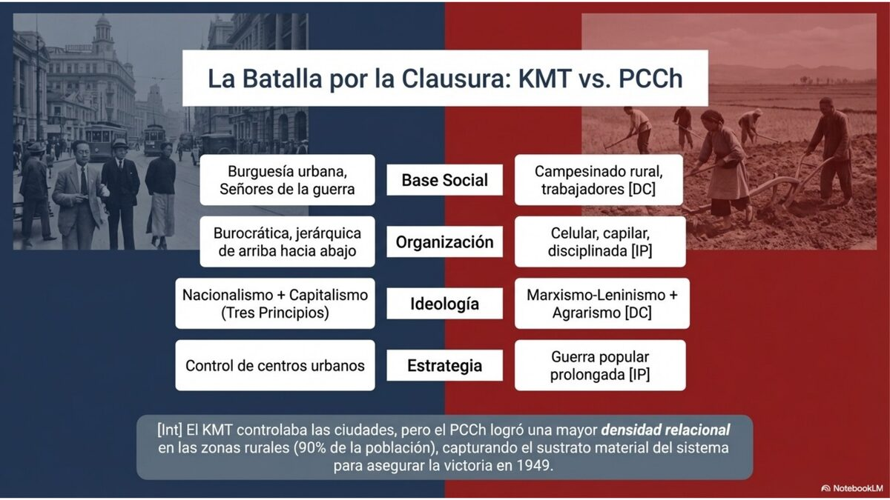
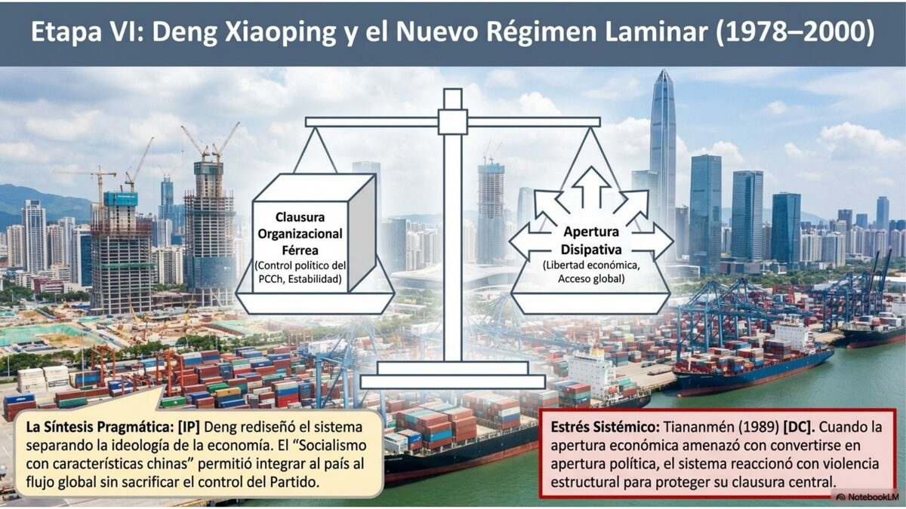
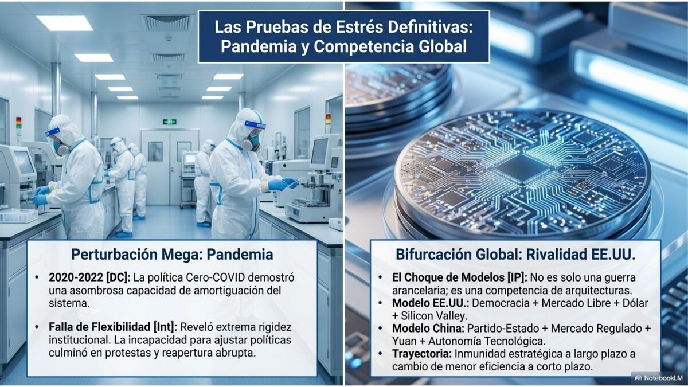
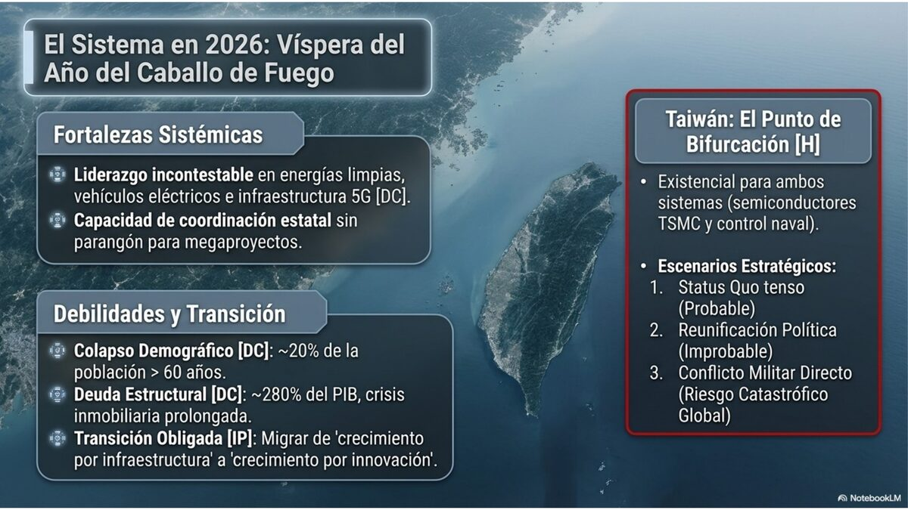

Etapa I · Las Guerras del Opio: El Primer Golpe
En 1839, el comisionado imperial Lin Zexu ordenó destruir más de mil toneladas de opio en el puerto de Cantón. DC Era una decisión soberana, justa y fatal. El Imperio Británico —que sostenía el lucrativo triángulo comercial algodón-opio-seda— respondió con sus cañones de vapor, y la Primera Guerra del Opio (1839–1842) demostró con sangre que la clausura organizacional de la Qing ya no podía proteger sus fronteras.
DC El Tratado de Nankín (1842) fue el primero de los llamados "tratados desiguales": China cedió Hong Kong a Gran Bretaña, abrió cinco puertos al comercio extranjero y pagó una indemnización de 21 millones de dólares de plata. La soberanía Qing, que durante siglos había dictado los términos de todo intercambio, quedó subordinada a potencias cuya capacidad industrial China apenas comenzaba a comprender.
La Segunda Guerra del Opio (1856–1860) fue aún más brutal. DC Las tropas franco-británicas marcharon sobre Pekín y quemaron el Palacio de Verano (Yuanmingyuan) —uno de los complejos arquitectónicos más extraordinarios del mundo—, una destrucción deliberada concebida como mensaje al emperador. La Convención de Pekín (1860) amplió los "puertos de tratado", legalizó el comercio del opio y cedió la península de Kowloon a Gran Bretaña. Int El incendio del Palacio de Verano no fue un exceso de guerra: fue una declaración de jerarquía civilizatoria, una herida que los chinos no olvidarán.

- Clasificación: Los hechos centrales (tratados, fechas, cifras de indemnización, destrucción del Palacio de Verano) son DC con amplísima documentación primaria. La interpretación del incendio como "declaración de jerarquía" es Int.
- Evaluación Explicacionista: La narrativa occidental clásica presenta las guerras como respuesta al "proteccionismo chino"; la narrativa china las presenta como agresión colonial pura. IP Ambas son parciales: existía un conflicto sistémico entre dos lógicas de intercambio incompatibles, y el monopolio militar industrial europeo inclinó definitivamente la balanza.
- Advertencia epistémica: Las cifras exactas del opio destruido por Lin Zexu varían según las fuentes. H La cantidad más citada (1,200 toneladas) no está libre de imprecisión documental.
- Perturbación externa: Las Guerras del Opio son la perturbación más severa recibida por el sistema chino desde la conquista mongola del siglo XIII. La diferencia es que la brecha no es de número sino de tecnología: cañones de vapor vs. artillería de bronce.
- Colapso de la clausura organizacional: El sistema Qing había operado bajo el principio de que China era el centro del orden mundial. Los tratados desiguales destruyen esta clausura: el Estado pierde la capacidad de definir unilateralmente los términos de su relación con el entorno.
- Nuevo atractor forzado: Las "concesiones" en los puertos de tratado crean enclaves sistémicos donde la lógica capitalista industrial opera dentro del cuerpo del Imperio, generando tensiones acopladas imposibles de desacoplar.
- Bifurcación pendiente: El sistema Qing no colapsa aún —su clausura organizacional sobrevive formalmente— pero entra en régimen de turbulencia sostenida que durará hasta 1912.
Costa Rica en 1840 era una república de apenas 20 años, exportando café al mercado mundial por primera vez. El mismo ciclo de expansión capitalista europeo que llevó los cañones a Cantón fue el que convirtió el grano costarricense en mercancía de exportación.
La lección sistémica: Ningún Estado, por más soberano que se declare, está inmunizado frente a la asimetría tecnológica cuando el sistema mundial se reconfigura. La diferencia entre Costa Rica y China en este período fue, en parte, el tipo de inserción que cada uno logró negociar —o que le fue impuesto.
Etapa II · El Caos Interior y el Autofortalecimiento
Mientras las potencias extranjeras presionaban desde afuera, China ardía desde adentro. DC La Rebelión Taiping (1850–1864) fue quizás la guerra civil más mortífera del siglo XIX: Hong Xiuquan, un aspirante a examinado que creyó haber recibido una visión divina, fundó el Reino Celestial de la Gran Paz y tomó Nankín —que rebautizó "Tianjing", la capital celestial— en 1853. Las estimaciones de muertos oscilan entre 20 y 30 millones, una cifra que no se superaría en el mundo occidental hasta la Primera Guerra Mundial.
La respuesta del Estado Qing fue reveladora de su debilidad: DC no fue el ejército imperial sino milicias provinciales privadas —las de Zeng Guofan y Li Hongzhang— las que aplastaron a los Taiping. El poder real comenzaba a descentralizarse hacia los señores militares regionales, una tendencia que definiría la política china durante el siguiente siglo.
Del desastre emergió una respuesta modernizadora: el Movimiento de Autofortalecimiento (1861–1895). DC Impulsado por Li Hongzhang y Zhang Zhidong, buscaba adoptar la tecnología occidental —arsenales, ferrocarriles, telégrafos, escuelas técnicas— sin alterar los valores confucianos. El lema era "conocimiento chino para el sustrato, saber occidental para la función." IP Era una apuesta racional, pero subestimaba hasta qué punto la tecnología industrial es inseparable de las relaciones sociales que la producen.
La Primera Guerra Sino-Japonesa (1894–1895) liquidó estas esperanzas. DC Japón —que había iniciado su modernización apenas en 1868 con la Restauración Meiji— destruyó en semanas la flota modernizada de Li Hongzhang. El Tratado de Shimonoseki (1895) obligó a China a ceder Taiwán y las islas Pescadores a Japón y pagar una indemnización de 200 millones de taeles de plata.

- Cifras de la Taiping: Los 20–30 millones de muertos son DC en cuanto a rango, pero la imprecisión es grande: algunos historiadores dan cifras de hasta 50 millones incluyendo hambrunas y enfermedades asociadas. H La causalidad directa vs. indirecta es difícil de separar.
- Sobre el Autofortalecimiento: Int Desde ADD no se trata de "modernización incompleta" sino de que toda tecnología industrial porta su propia clausura organizacional: no se puede importar el vapor sin importar también la lógica del capitalismo industrial.
- Sobre Japón: Si un Estado asiático "menor" había logrado modernizarse exitosamente en 27 años, la explicación de la debilidad china no podía ser racial ni geopolítica sino estructural. IP
- Régimen de turbulencia sostenida: La Rebelión Taiping es el resultado de un sistema que no logra disipar la energía acumulada por las perturbaciones externas (guerras del opio) e internas (hambrunas, corrupción, sobrepoblación). El movimiento mesiánico es una bifurcación fallida: intenta crear un nuevo atractor pero carece de la base material para sostenerse.
- Descentralización como respuesta adaptativa: El surgimiento de las milicias provinciales como actores de poder es una respuesta disipativa del sistema: delega capacidad de respuesta al entorno cuando el centro ya no puede gestionarla. Esta descentralización resuelve la crisis Taiping pero siembra el problema de los señores de la guerra del siglo XX.
- El Autofortalecimiento como acoplamiento selectivo fallido: El fracaso ante Japón demuestra que los sistemas no se pueden acoplar a voluntad: los flujos tecnológicos arrastran sus propias condiciones sistémicas.
- 1895 como bifurcación: La derrota ante Japón hace evidente incluso para las élites reformadoras dentro del sistema Qing que la clausura organizacional imperial ya no es viable. El sistema entra en su fase terminal.
El Movimiento de Autofortalecimiento plantea una pregunta que Costa Rica sigue debatiendo: ¿es posible adoptar las herramientas del capitalismo global —tecnología, inversión, mercados— sin adoptar también sus lógicas sociales y políticas? La tensión entre "modernización selectiva" y transformación sistémica no es exclusiva de China.
La pregunta ADD: Int Costa Rica ha apostado históricamente por la inserción tecnológica (Intel, zona franca, turismo) manteniendo un tejido social relativamente autónomo. ¿Hasta cuándo esos dos sistemas pueden coexistir sin que el segundo devore al primero?
Etapa III · El Ocaso Imperial: Reformas, Bóxers y Revolución
La derrota ante Japón desencadenó una crisis de legitimidad sin precedentes. DC En 1898, el joven emperador Guangxu apoyó las Reformas de los Cien Días —impulsadas por Kang Youwei y Liang Qichao— un programa que incluía modernizar el sistema educativo, crear un ejército moderno y transformar la monarquía en constitucional. Duró 103 días: la emperatriz viuda Cixi dio un golpe de Estado, encerró al emperador y ejecutó a seis de los principales reformadores.
El rechazo a la reforma desde el interior abrió el camino a la violencia desde abajo. DC La Rebelión de los Bóxers (1899–1901) canalizó el resentimiento antiextranjero: los "puños de la justicia y la armonía" creían que los rituales marciales los volvían inmunes a las balas. Cuando Cixi declaró la guerra a las ocho potencias invasoras, la coalición internacional aplastó la rebelión. El Protocolo Bóxer (1901) impuso a China la indemnización más humillante de su historia: 450 millones de taeles de plata a pagar en 39 años.
DC El levantamiento de Wuchang (10 de octubre de 1911) —iniciado casi por accidente cuando militares republicanos descubrieron que su conspiración había sido delatada y decidieron actuar de inmediato— se extendió por 15 provincias en semanas. El 12 de febrero de 1912, el niño emperador Puyi abdicó. Dos mil años de gobierno imperial chino terminaron en un comunicado firmado con el sello del Hijo del Cielo.

- Las Reformas de los Cien Días: Los hechos son DC. La interpretación de Cixi como simple reaccionaria es H: algunos historiadores argumentan que actuó también para proteger su base de poder, no meramente por oposición ideológica a la modernización.
- Los Bóxers: La complicidad de Cixi con los Bóxers es DC documentalmente. Su cálculo estratégico —usar la rebelión para expulsar a los extranjeros— fue IP un error catastrófico que aceleró la desintegración del sistema que pretendía proteger.
- La abdicación de Puyi: IP Decir que el levantamiento de Wuchang fue "accidental" es impreciso: la chispa fue accidental, pero el polvorín —la organización republicana de años— no lo era.
- Colapso de la clausura organizacional imperial: Las Reformas de los Cien Días demuestran que el sistema Qing ya no puede reformarse desde adentro. Es el momento clásico de irreversibilidad sistémica: el sistema reconoce la perturbación pero no puede integrarla sin disolverse.
- Los Bóxers como disipación fallida: El movimiento es un intento de disipar la tensión sistémica acumulada mediante la expulsión violenta del elemento extranjero. El fracaso demuestra que el acoplamiento era ya tan profundo que no era posible desacoplarlo sin destruir el propio sistema.
- La bifurcación republicana: 1911-1912 es una bifurcación sistémica real. Pero el nuevo atractor republicano no está consolidado —carecía de base social, ejército propio y acuerdo sobre la forma del Estado. China entra en un interregno turbulento de décadas.
El colapso Qing ilustra la "trampa de la reforma": cuando un sistema espera demasiado para reformarse, la única salida posible es la ruptura total. Costa Rica ha evitado históricamente este colapso mediante reformas graduales —1948 fue una guerra civil breve seguida de una transformación institucional profunda— pero la condición del éxito fue siempre la existencia de élites con visión de Estado dispuestas a sacrificar privilegios antes del punto de no retorno.
Etapa IV · La República Rota: Señores de la Guerra, Japón y la Guerra Civil
La República de China nació débil. DC Sun Yat-sen, el padre fundador republicano, tuvo que ceder la presidencia al general Yuan Shikai —que controlaba el único ejército viable— apenas semanas después de proclamada la República. Yuan intentó restaurar la monarquía con él mismo como emperador en 1915, fracasó, y murió en 1916, dejando el país fragmentado entre señores de la guerra regionales.
DC El Movimiento del 4 de Mayo (1919) —protesta masiva contra el Tratado de Versalles, que otorgó los territorios alemanes en China no a la República sino a Japón— fue el momento de cristalización de una generación de intelectuales convencidos de que China necesitaba una revolución cultural total. Del fermento surgió el Partido Comunista de China (PCCh), fundado en Shanghái en julio de 1921 con 53 miembros.
DC La Expedición Norte (1926–1928) avanzó desde Cantón hacia el norte, pero en abril de 1927 Chiang Kai-shek ordenó la Masacre de Shanghái: miles de comunistas y trabajadores sindicalizados fueron asesinados en una purga que rompió la alianza KMT-PCCh y desencadenó una guerra civil.
Sobre esta guerra civil cayó la invasión japonesa. DC Japón ocupó Manchuria en 1931 e invadió masivamente China continental en julio de 1937. Entre diciembre de 1937 y enero de 1938, las tropas japonesas perpetraron la Masacre de Nankín: entre 100,000 y 300,000 civiles asesinados en seis semanas. El PCCh sobrevivió gracias a la Larga Marcha (1934–1935): de los 370,000 que partieron de Jiangxi, aproximadamente 30,000 llegaron a Yan'an en el norte.
DC El 1 de octubre de 1949, Mao Zedong proclamó en la Plaza de Tiananmén la fundación de la República Popular China. Chiang Kai-shek y los restos del KMT se retiraron a Taiwán.

- La Masacre de Nankín: La ocurrencia es DC con evidencia abrumadora. Las cifras (100,000–300,000) son debatidas: el rango bajo es el mínimo admitido incluso por las fuentes más conservadoras. Int La negación por parte de figuras políticas japonesas no tiene base evidencial: es ideología, no historiografía.
- La Larga Marcha como mito fundacional: Los datos duros (partida, llegada, supervivientes) son DC. La narrativa éptica oficial china es Int: hubo también decisiones brutales, purgas internas y sufrimiento que el relato oficial silencia.
- Por qué ganó el PCCh: IP La victoria no se explica solo por el apoyo campesino: también intervino el agotamiento del KMT por la guerra con Japón, la corrupción del aparato nacionalista y la asistencia soviética al PCCh en Manchuria (1945–1946).
- Interregno sistémico: Entre 1912 y 1949 China no tiene un atractor estable. El régimen de señores de la guerra es la expresión de un sistema que perdió su clausura organizacional central y oscila entre múltiples subatractores regionales, incapaces de consolidarse a escala nacional.
- La perturbación japonesa como catalizador: La invasión japonesa paradójicamente aceleró la resolución de la guerra civil: obligó a ambos partidos a definir su capacidad de respuesta y mostró cuál de los dos tenía mayor capacidad para movilizar energía social a escala nacional. El PCCh la tenía.
- 1949 como nueva clausura organizacional: La proclamación de la RPC es la emergencia de un nuevo atractor con una clausura organizacional completamente distinta a la imperial y a la republicana. El Partido-Estado leninista introduce una lógica sistémica inédita en la historia china.
- Taiwán como bifurcación persistente: La retirada del KMT crea una bifurcación sistémica que permanece abierta hasta hoy: dos Estados que reclaman ser China, cada uno con su propia clausura organizacional.
La guerra civil china y la ruta del PCCh —movilización campesina, organización territorial, paciencia estratégica— fue estudiada por movimientos revolucionarios latinoamericanos activos en Centroamérica durante la segunda mitad del siglo XX.
La comunidad china en Costa Rica tiene raíces históricas en esta época: familias llegadas huyendo de la guerra civil o de la invasión japonesa. DC La primera migración china significativa a Costa Rica data de finales del siglo XIX (construcción del ferrocarril al Atlántico), con oleadas posteriores durante los conflictos del siglo XX.
Etapa V · La Era de Mao: Ingeniería Social y Catástrofe
La RPC nació con una agenda de transformación total. DC Los primeros años (1949–1957) trajeron logros reales: reforma agraria que distribuyó tierra a 300 millones de campesinos, expansión de la alfabetización y construcción de infraestructura básica. La clausura organizacional del nuevo Estado se consolidó sobre tres pilares: el monopolio del Partido, la economía planificada de estilo soviético y el culto a la personalidad de Mao Zedong.
DC En 1956, la campaña de las Cien Flores invitó a los intelectuales a criticar abiertamente al Partido. Cuando las críticas resultaron ser más profundas de lo esperado, Mao respondió con la campaña Antiderechista (1957): más de 500,000 personas fueron etiquetadas como "derechistas" y enviadas a campos de reeducación o trabajo forzado. Fue el ensayo general de lo que vendría.
DC El Gran Salto Adelante (1958–1962) fue el experimento de ingeniería social más catastrófico del siglo XX. Mao ordenó colectivizar toda la producción agrícola en comunas populares y lanzar una campaña para convertir a China en potencia industrial fundiendo acero en hornos caseros. El resultado: entre 30 y 45 millones de muertos por hambre en tres años, mientras los cuadros locales, aterrorizados de reportar fracasos, enviaban estadísticas falsamente optimistas y el Estado continuaba exportando grano.
DC La Revolución Cultural (1966–1976) fue una purga sistémica de sus enemigos políticos disfrazada de revolución ideológica. Los Guardias Rojos destruyeron templos, quemaron libros y humillaron públicamente a maestros, médicos, científicos y funcionarios del Partido. Las estimaciones de muertos directos oscilan entre 1 y 2 millones; los afectados por persecuciones superan los 30 millones. Mao Zedong murió el 9 de septiembre de 1976.

- Cifras del Gran Salto: El rango 30–45 millones es el consenso académico dominante. DC como rango; la precisión de cualquier cifra individual es H dado que los registros fueron sistemáticamente manipulados. La responsabilidad de Mao como arquitecto de la política es DC.
- Debate sobre la intencionalidad: ¿Fue el Gran Salto un genocidio deliberado o una catástrofe producida por negación de la realidad? H La evidencia disponible sugiere que Mao conocía parcialmente los informes de hambruna pero los descartó; la deliberación total está menos documentada que el rechazo sistemático a enfrentar las consecuencias.
- Sobre la Revolución Cultural: El uso político interno como herramienta de purga es DC. Int Los sistemas no producen este tipo de violencia coordinada sin una arquitectura de movilización deliberada desde arriba.
- El Gran Salto como colapso de retroalimentación: El sistema político maoísta eliminó los mecanismos de retroalimentación negativa (crítica, información honesta, rendición de cuentas) que todo sistema complejo necesita para autocorregirse. Sin retroalimentación, el sistema no puede detectar que se está destruyendo a sí mismo: esto es lo que diferencia al Gran Salto de una mala política ordinaria —es un fallo sistémico estructural.
- La Revolución Cultural como autoperturbación radical: En términos ADD, es el momento en que Mao utiliza al propio sistema como instrumento de perturbación de sí mismo. El costo sistémico fue la destrucción de una generación entera de capital humano.
- 1976 como bifurcación abierta: La muerte de Mao deja el sistema en un punto de bifurcación real: el atractor maoísta está agotado, pero no existe todavía un atractor alternativo consolidado.
La era maoísta ofrece la lección más brutal sobre los límites de la ingeniería social: ningún proyecto político sobrevive a la eliminación de los mecanismos de retroalimentación y corrección. Las instituciones democráticas costarricenses —la Contraloría, la Defensoría, la prensa independiente, los partidos de oposición— no son lujos: son los mecanismos de retroalimentación que impiden que el sistema político colapse en su propio error.
La pregunta de los 30 millones no es solo histórica: es estructural. Int Todo sistema que concentra poder sin mecanismos de corrección lleva en sí la semilla del Gran Salto.
Etapa VI · Deng Xiaoping: Reforma, Apertura y el Límite del Tanque
Tras la muerte de Mao, China enfrentó una pregunta existencial: ¿cómo enjuiciar al maoísmo sin deslegitimar al Partido que lo había sustentado? DC La respuesta oficial fue la fórmula de que Mao había sido "70% correcto y 30% equivocado" —una ficción política, pero una que permitió al sistema transitar sin ruptura. Deng Xiaoping, purgado dos veces durante la Revolución Cultural, emergió como el arquitecto de la nueva China.
DC En diciembre de 1978, la proclamación de la política de Reforma y Apertura en el Tercer Pleno del XI Comité Central del PCCh marcó la bifurcación más importante en la historia de la RPC. Deng descolectivizó la agricultura, introdujo mecanismos de mercado y estableció las primeras Zonas Económicas Especiales (ZEE) —Shenzhen, Zhuhai, Shantou, Xiamen— donde el capitalismo de mercado operaría como experimento controlado.
DC Entre 1978 y 1989, el PIB chino creció a una tasa promedio superior al 9% anual. Shenzhen pasó de ser una aldea de pescadores a una metrópolis industrial de varios millones de habitantes en menos de una década.
Pero la apertura económica generó expectativas políticas que el sistema no estaba dispuesto a satisfacer. DC El 4 de junio de 1989, el ejército chino dispersó por la fuerza las protestas en la Plaza de Tiananmén y en otras ciudades. Las estimaciones de muertos varían; fuentes diplomáticas británicas desclasificadas en 2017 mencionan entre 2,600 y 3,000. En China, las imágenes de esa jornada están censuradas.

- Las cifras de Tiananmén: DC que hubo una masacre con muertos civiles. Las cifras exactas son H: la opacidad del gobierno chino hace imposible una verificación independiente.
- El "milagro" económico: El crecimiento es DC. Su sustentabilidad a largo plazo sin reformas institucionales paralelas era H en 1989, aunque la historia posterior mostró que duró décadas más de lo que muchos economistas predijeron.
- La fórmula 70/30: Es evidentemente Int política, no evaluación histórica: su función no era describir a Mao sino proteger al Partido.
- Deng como arquitecto de un nuevo atractor: La Reforma y Apertura es la creación deliberada de un nuevo atractor sistémico: "socialismo con características chinas" —economía de mercado con monopolio político del Partido. Es un acoplamiento inédito en la historia de los sistemas políticos modernos.
- Las ZEE como laboratorios de acoplamiento controlado: Permiten acoplar el sistema chino a los flujos del capitalismo global sin que esos flujos alteren el atractor político central. Son burbujas de acoplamiento selectivo a escala territorial.
- Tiananmén como definición del límite sistémico: La represión de 1989 no fue un accidente: fue la definición explícita del límite de la apertura. El sistema puede abrirse en lo económico; no puede hacerlo en lo político sin disolver la clausura organizacional del Partido. Este límite permanece vigente hasta hoy.
El modelo Deng plantea una pregunta incómoda para las democracias liberales: ¿puede una economía de mercado sostenerse a largo plazo sin libertades políticas paralelas? La respuesta china durante 40 años ha sido "sí, al menos hasta cierto punto."
Para Costa Rica el dilema es de política exterior: cómo relacionarse con una potencia que es simultáneamente socio económico indispensable y referente político incompatible con sus valores constitucionales. Esta tensión, latente en 1989, se hará más aguda con cada década.
Etapa VII · El Despegue: De Tiananmén a la Segunda Economía del Mundo
En enero de 1992, con 88 años y sin cargo oficial, Deng Xiaoping realizó su célebre Tour del Sur: visitó Shenzhen, Zhuhai y Shanghái y pronunció discursos que relanzaron la reforma tras el enfriamiento posterior a 1989. DC El mensaje era inequívoco: el crecimiento económico era la única fuente legítima de legitimidad para el Partido en la era post-Tiananmén.
DC Bajo Jiang Zemin (1989–2002), China creció a tasas del 8–10% anual, incorporó a cientos de millones de campesinos al mercado laboral urbano y recuperó Hong Kong (1997) y Macao (1999) mediante el principio de "un país, dos sistemas." El ingreso a la Organización Mundial del Comercio en diciembre de 2001 integró a China definitivamente en las cadenas globales de valor.
DC Hu Jintao (2002–2012) intentó templar el crecimiento con la doctrina de la "sociedad armoniosa" —reconocimiento implícito de que las desigualdades generadas por el boom eran políticamente peligrosas. Los Juegos Olímpicos de Pekín 2008 fueron la presentación simbólica de China como potencia modernizada: la ceremonia inaugural fue el espectáculo más visto en la historia de la televisión hasta esa fecha.
En 2010, DC China superó a Japón para convertirse en la segunda economía del mundo. En menos de tres décadas, había sacado de la pobreza extrema a más de 700 millones de personas —la reducción de pobreza más rápida en la historia documentada de la humanidad.

- Los 700 millones sacados de la pobreza: La cifra es DC según las métricas del Banco Mundial. La definición de "pobreza extrema" es metodológicamente debatida, pero el orden de magnitud del logro es incontestable.
- "Un país, dos sistemas": El principio era DC como compromiso para 50 años (hasta 2047 para HK). Su erosión posterior es DC como hecho y Int como traición al acuerdo según los manifestantes hongkoneses.
- La "sociedad armoniosa" de Hu Jintao: Como diagnóstico de los problemas del crecimiento acelerado es IP correcto. Como programa de solución fue Int insuficiente: las desigualdades continuaron creciendo durante toda su presidencia.
- El nuevo atractor se consolida: El período 1992–2012 es la fase de consolidación del atractor "capitalismo de Estado con partido único." La clausura organizacional funciona: el sistema puede absorber perturbaciones (crisis asiática de 1997, SARS 2003, crisis financiera global 2008) sin bifurcarse.
- Los flujos disipativos globales como motor: La inserción en la OMC y las cadenas globales de valor convierte a China en el mayor receptor de flujos disipativos de capital e inversión extranjera de la historia. El sistema disipa enormes cantidades de energía social (trabajo) y genera riqueza a velocidades antes desconocidas.
- Tensiones acumuladas: El crecimiento acelerado genera sus propias perturbaciones internas: desigualdad campo-ciudad, corrupción sistémica, degradación ambiental severa, crecimiento de la deuda. Son los flujos de entropía que el sistema deberá gestionar en la siguiente fase.
DC Costa Rica estableció relaciones diplomáticas con la RPC en junio de 2007 —fue el primer país de América Central en hacerlo. La decisión fue económicamente racional: China se había convertido en uno de los principales socios comerciales de Costa Rica. Fue también políticamente costosa: implicó romper relaciones con Taiwán, con quien CR había mantenido vínculos durante décadas.
El dilema de la inserción: La pregunta que Costa Rica enfrenta desde 2007 es la misma que enfrenta cualquier economía pequeña en relación a una potencia en ascenso: cómo aprovechar los flujos económicos sin perder autonomía de decisión política. No hay respuesta fácil, pero sí hay consecuencias claras de no tener estrategia.
Etapa VIII · Xi Jinping y el Sueño Chino
DC Xi Jinping asumió como Secretario General del PCCh en noviembre de 2012 y como presidente en marzo de 2013. La campaña anticorrupción —que hasta 2023 había investigado a más de un millón de funcionarios— fue simultáneamente una operación de saneamiento real, una consolidación de poder personal y una purga de rivales políticos. DC Ningún líder desde Mao había acumulado tanto poder tan rápidamente.
El proyecto de Xi tiene nombre: el Sueño Chino (中国梦). DC En 2013 lanzó la Iniciativa de la Franja y la Ruta (BRI): el mayor proyecto de infraestructura global en la historia, que para 2024 había involucrado a más de 150 países y un valor estimado superior al billón de dólares en inversiones. Puertos, ferrocarriles, oleoductos y plantas eléctricas desde África Oriental hasta América Latina llevan el sello del capital chino.
En 2018, DC el Partido eliminó el límite constitucional de dos mandatos presidenciales, abriendo el camino para que Xi gobernara indefinidamente. DC En Xinjiang, más de un millón de uigures y otras minorías musulmanas fueron internados en lo que el gobierno llama "centros de formación profesional" y la ONU denomina detención masiva arbitraria. En 2020, la Ley de Seguridad Nacional de Hong Kong puso fin efectivo al "un país, dos sistemas" prometido hasta 2047.
La pandemia de COVID-19 —cuyo primer brote DC fue documentado en Wuhan a finales de 2019— probó los límites del modelo. China aplicó la política de "Cero COVID" con rigor extremo durante casi tres años, antes de abandonarla abruptamente en diciembre de 2022 ante protestas sin precedentes. El origen exacto del virus permanece H sin resolución científica definitiva.
DC Xi y Putin firmaron en febrero de 2022 —días antes de la invasión rusa de Ucrania— una declaración de "asociación sin límites." China ha mantenido esa asociación sin condenar la invasión. La guerra tecnológica con los Estados Unidos se ha intensificado: restricciones a la exportación de semiconductores avanzados, procesos contra Huawei y ZTE, debates globales sobre TikTok, y una carrera por el dominio de la inteligencia artificial. DC Las incursiones del ejército chino en la zona de identificación de defensa aérea taiwanesa superaron las 900 en 2023.

- La campaña anticorrupción: Los hechos (número de investigados, figuras prominentes caídas) son DC. La doble función —saneamiento real + purga política— es IP ampliamente documentada.
- Xinjiang: La existencia de los centros de detención y su escala (1M+) es DC con documentación satelital, testimonios y filtraciones de documentos internos del Partido ("China Cables", "Xinjiang Police Files"). La calificación legal exacta —genocidio cultural, crímenes contra la humanidad— es objeto de debate jurídico: los hechos materiales son claros; la clasificación varía según el marco jurídico aplicado.
- COVID-19 y su origen: Primer brote en Wuhan finales 2019 es DC. Origen: H genuina. Las investigaciones de la OMS y los servicios de inteligencia de EEUU no han producido evidencia concluyente para ninguna hipótesis.
- La asociación China-Rusia: La firma del acuerdo y la abstención en Naciones Unidas son DC. Si implica apoyo material a Rusia en Ucrania es H con evidencias parciales. Int La relación es instrumentalmente conveniente para ambos pero estructuralmente asimétrica: China es la parte dominante.
- Xi como rediseño del atractor: Xi Jinping no está simplemente gobernando dentro del sistema creado por Deng: lo está rediseñando. La eliminación del límite de mandatos y la concentración de poder señalan que el atractor "reforma y apertura" está siendo reemplazado por un nuevo atractor más cerrado y centralizado.
- El BRI como proyección disipativa global: La Iniciativa de la Franja y la Ruta es la extensión de los flujos disipativos chinos a escala planetaria: China exporta capital excedente, importa recursos y amplía su campo de influencia sistémica. Es el equivalente del siglo XXI al Silk Road histórico, dirigido por un Estado-Partido con capacidad de planificación de largo plazo.
- Tensiones sistémicas en 2026: El sistema enfrenta perturbaciones simultáneas: desaceleración demográfica, deuda de los gobiernos locales, burbuja inmobiliaria (Evergrande), guerra tecnológica con EEUU y la pregunta sobre Taiwán. C La pregunta ADD pertinente no es "¿cuándo colapsará China?" —el sistema tiene enorme resiliencia demostrada— sino "¿cuál es el nuevo atractor hacia el que se dirige?"
- Taiwán como bifurcación latente: El conflicto de Taiwán es la bifurcación más peligrosa del sistema mundial actual: dos clausuras organizacionales incompatibles (RPC y democracia taiwanesa) sostenidas sobre la ambigüedad estratégica de EEUU. Si esa ambigüedad se resuelve —en cualquier dirección— el impacto sistémico será global.
DC Costa Rica firmó un Tratado de Libre Comercio con China en 2010, el primero de América Latina con la RPC. Para 2026, China es uno de los principales socios comerciales de Costa Rica. La BRI ha generado ofertas de inversión en infraestructura que el gobierno costarricense ha evaluado con cautela creciente.
El dilema en 2026: Cada proyecto de infraestructura china en Costa Rica plantea tres preguntas simultáneas: ¿es económicamente conveniente? ¿crea dependencias estratégicas? ¿qué condiciones de gobernanza implica? La experiencia de otros países con la BRI —Sri Lanka, Ecuador— sugiere que la conveniencia a corto plazo puede comprometer la autonomía a largo plazo.
La posición costarricense sobre Xinjiang, Hong Kong y Taiwán está sujeta a la tensión permanente entre sus valores constitucionales (derechos humanos, democracia) y su dependencia económica creciente de la RPC. Int Esta tensión no desaparecerá: se administra, no se resuelve.